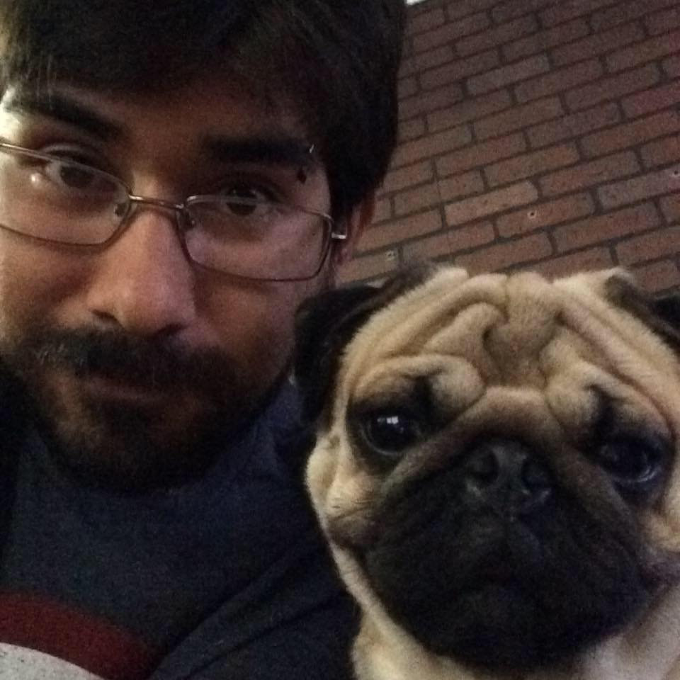

Elliot Arana Morales

Summary
A mexican starting from scratch living in Canada, looking for a position as a Full Stack Developer in which my problem-solving skills, communication and technological skills can help an organization to fulfill their goals.
More about me
Education
-
Web Development and Internet Applications, FANSHAW COLLEGE
2022-2024
-
Petroleum Engineering, UNIVERSIDAD NACIONAL AUTÓNOMA DE MÉXICO
2012-2017
Work Experience
-
Distribution Center Employee, COLUMBIA SPORTSWARE DISTRIBUTION CENTER
March 2023-Present
-
Risk Analyst, PACTERA EDGE
July 2021- August 2022
-
Field Engineer, ENGINEERING CONSULTING FOR REINSURANCE (EC4)
September 2018- August 2020
Skills
Software skills
Front-end:
HTML5, CSS3, Bootstrap, UI / UX, Responsive web design, JavaScript, TypeScript, React, AngularBack-end:
NodeJS, PHP, Restful APIsDatabase:
MongoDB, MySQL, Oracle
Problem solving and organizational skills
- Analyzed and assessed risk factors in safety and e-commerce transactions.
- Identified risk concerns bye affectively analyzing data and trends.
- Measured fraud-identification effectiveness and suggested valuable improvements that helped the business.
- Troubleshoot issues related to product handling and distribution.
- Accomplished various Service Level Agreement deadlines under a high-pressure environment.
Comunication and computer skills
- Provided various solutions effectively while addressing clients concerns.
- Collaborated with team members to share findings and insights in sync meetings.
- Provided clear, concise explanations of complex and technical concepts to clients and team members.
- Improved quality control plans to improve performance effectively.
- Monitored and analyzed data to distinguish risk transactions.
- Handled e-commerce activities applying value-added services using relevant software.